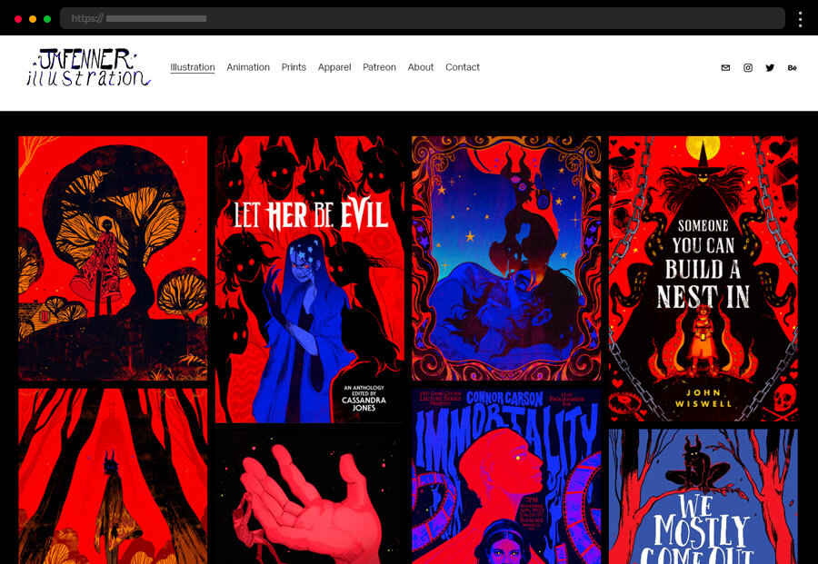
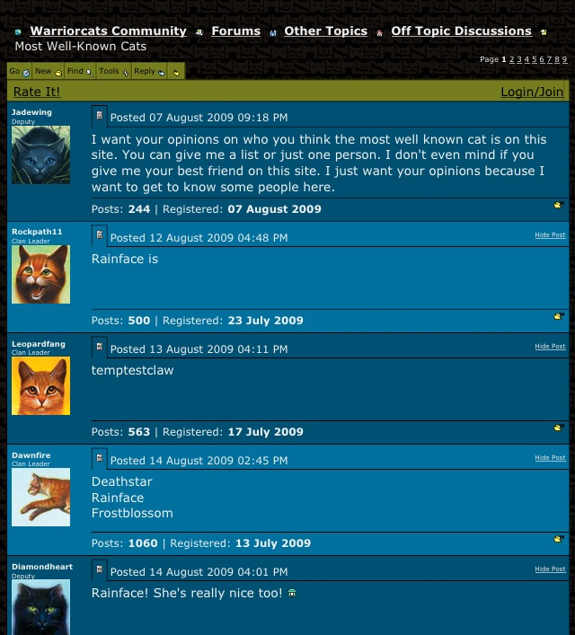
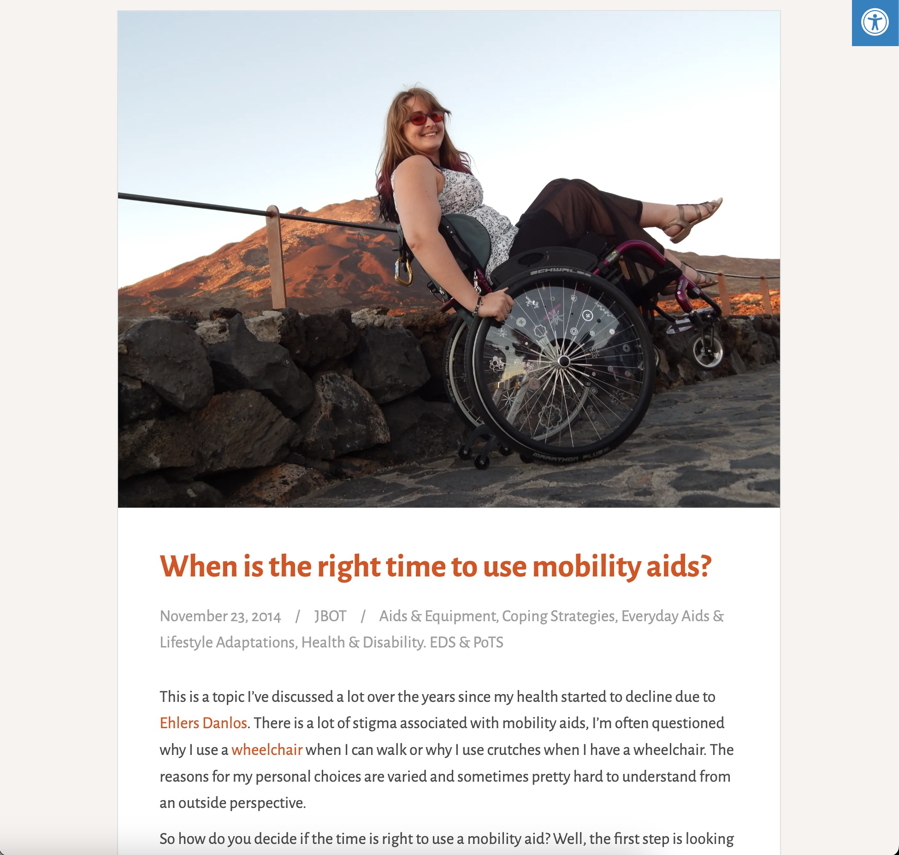

The first idea for my website is a portfolio for commissions. This portfolio would professionaly display my work while still having a fun, personal touch.
The image provided is Jim Fenner's portfolio site as an example.
The second idea for a website is a forum based website. This would be a fun website, which allows fans of a selected media to make posts discussing the topic.
This photo is of the fourm site for the Warriors books, that has since been discontinued.
The third and final website idea is a personal blog. This would take a journal and personal feel, but allow for me to share my story of living with a chronic illness and how to navigate life to give support to others.
Above is a picture of the JB Occupational Therapy website, where advice discussing recovery with chronic health problems is discussed.